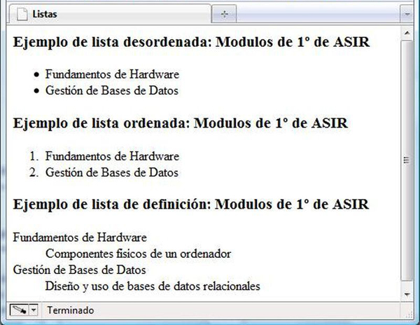

2.3.2.1.- Ejemplo.
Un ejemplo de un documento HTML que muestra la forma de utilizar estos elementos es:
<!DOCTYPE HTML PUBLIC "-//W3C//DTD HTML 4.0 transitional//EN" "http://www.w3.org/TR/REC-html40/loose.dtd">
<html>
<head>
<title>Listas</title>
</head>
<body>
<h3>Ejemplo de lista desordenada: Módulos de 1º de ASIR</h3>
<ul>
<li>Fundamentos de Hardware</li>
<li>Gestión de Bases de Datos</li>
</ul>
<h3>Ejemplo de lista ordenada: Módulos de 1º de ASIR</h3>
<ol>
<li>Fundamentos de Hardware</li>
<li>Gestión de Bases de Datos</li>
</ol>
<h3>Ejemplo de lista de definición: Módulos de 1º de ASIR</h3>
<dl>
<dt>Fundamentos de Hardware</dt>
<dd>Componentes físicos de un ordenador</dd>
<dt>Gestión de Bases de Datos</dt>
<dd>Diseño y uso de bases de datos relacionales</dd>
</dl>
</body>
</html>